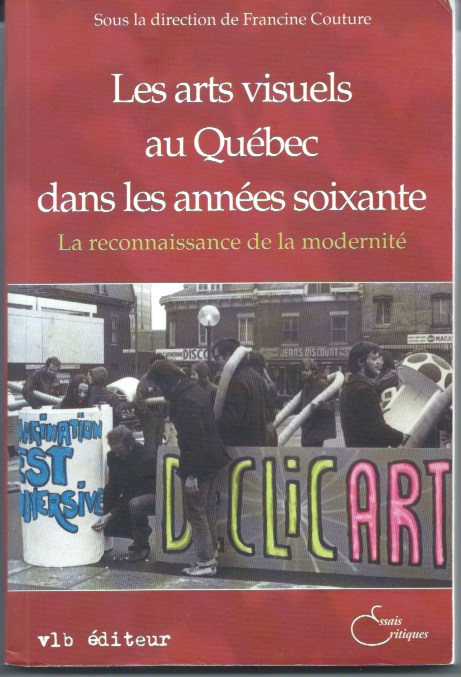
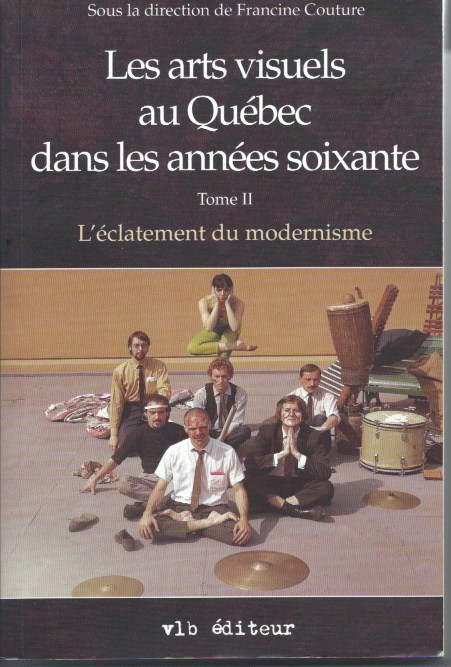
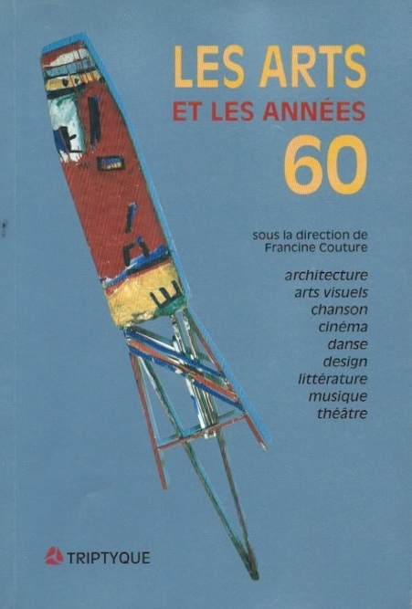
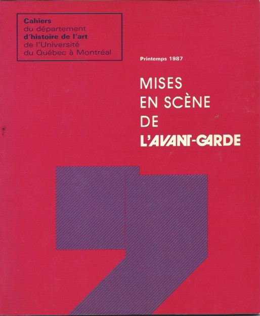
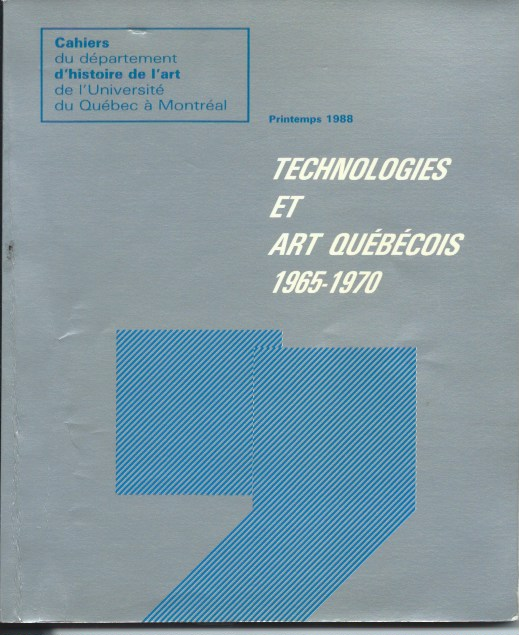
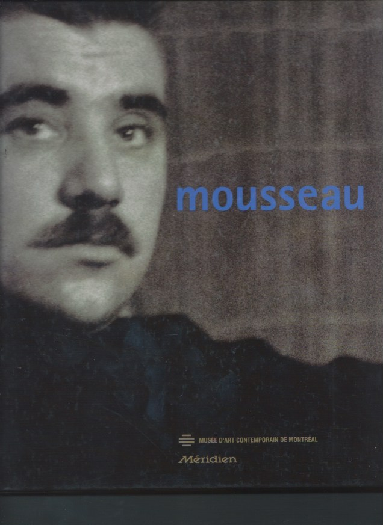
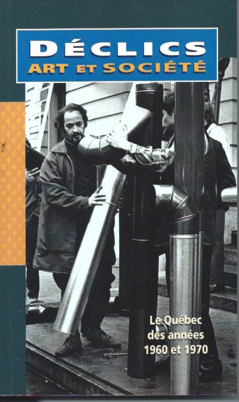

Les arts visuels dans les années 1960
À la fin des années 1980, j’ai formé un groupe de recherche avec des collègues du Département d’histoire de l’art de l’UQAM dans le but d’étudier l’art contemporain du Québec dans le milieu des années 1960. Ce groupe réunissait Rose-Marie Arbour reconnue pour ses études sur la pratique des femmes artistes, Marcel Saint-Pierre spécialiste de l’art du Québec, Serge Allaire intéressé par l’émergence du mouvement pop dans l’art québécois, et Suzanne Lemerise engagée dans l’étude de l’histoire de l’enseignement des arts plastiques. Ce sont joints à cette équipe, Marie Carani reconnue pour l’étude du courant de l’abstraction géométrique, Marie-Sylvie Hébert qui a réalisé l’étude de la réception critique de ce courant, Jean-Pierre Latour intéressé par les nouvelles pratiques de sculpture ainsi que Michel Roy qui a fait une analyse des regroupements d’artistes. Ce projet de recherche a donné lieu à la publication de deux ouvrages dont j’ai assumé la direction : Les arts visuels au Québec dans les années soixante, La reconnaissance de la modernité et Les arts visuels au Québec dans les années soixante, L’éclatement du modernisme (1997), ainsi que l’organisation d’un colloque intitulé Les arts et les années 60 : Architecture, arts visuels, chanson, cinéma, danse, design, littérature, musique, théâtre (1).
|  |  |  |
Ce projet de recherche a donné lieu à la publication de deux ouvrages dont j’ai assumé la direction : Les arts visuels au Québec dans les années soixante, La reconnaissance de la modernité et Les arts visuels au Québec dans les années soixante, L’éclatement du modernisme (1997), ainsi que l’organisation d’un colloque intitulé Les arts et les années soixante : Architecture, arts visuels, chanson, cinéma, danse, design, littérature, musique, théâtre.
Art et technologie
Dans le cadre de ce projet de recherche, j’ai analysé les œuvres et les discours critiques qui ont questionné les relations entre l’art et la technologie (2). Cette étude a pris en considération le rôle d’intermédiaire joué par les critiques d’art dans l’émergence de ce questionnement. Cette approche m’a été inspirée par les travaux de l’historien social de l’art T. J. Clark, et particulièrement par l’importance qu’il a donnée à l’analyse des commentaires des critiques d’art afin de mettre en lumière l’effet novateur d’une œuvre en démontrant comment elle a remis en question des valeurs esthétiques et des représentations sociales dominantes propres à son contexte socioculturel. (3). Je me suis également référée à l’esthétique de la réception de Hans Jauss fondée sur le concept d’horizon d’attente (4). L’historien social de l’art et le philosophe ont accordé la même attention à l’analyse de l’effet critique d’une œuvre en affirmant que cet effet résulte de son rapport avec les catégories cognitives, morales et esthétiques définissant l’horizon d’attente d’un récepteur, lequel s’y réfère pour donner du sens à une œuvre. Ils ont considéré que ces catégories ont un caractère normatif ou collectif et que l’effet novateur d’une œuvre se manifeste alors qu’elle opère une rupture avec ces normes pour en créer d’autres; c’est ainsi qu’elle agit sur les représentations esthétiques et sociales d’un contexte particulier.
|  |  |
La critique d’art a désigné comme novatrices des œuvres dont les thématiques étaient associées à la science et de la technologie.
Guidée par ces approches théoriques de la réception critique des œuvres, j’ai procédé à l’étude du discours des critiques d’art, dont les articles ont été publiés dans les journaux montréalais en 1965, afin de relever leurs commentaires sur la novation artistique (5). J’ai relevé qu’ils ont désigné comme novatrices des œuvres dont les thématiques ou les dispositifs formels étaient associés aux univers de la science et de la technologie. L’analyse des textes des critiques d’art, parus entre 1965 et 1970, a confirmé cette interprétation. J’ai identifié trois postures critiques qui se sont référées à différentes fonctions de l’art pour énoncer une évaluation des œuvres à teneur technologique (6). Les critiques, défendant l’idée que l’art était une interprétation subjective de la réalité, ont mis dos à dos les univers artistiques et industriels et technologiques qu’ils percevaient comme une négation de cette conception expressionniste de l’expérience artistique représentée par l’automatisme et plus globalement par l’abstraction lyrique. La relation art et technologie a été également évaluée par le point de vue formaliste qui mettait l’accent sur les aspects formels et matériels des œuvres fondant leur spécificité, conception spéculative de l’art qui s’est développée dans les années 1950 à propos de la peinture des Plasticiens et de l’abstraction géométrique. À propos des œuvres cinétiques, les tenant de ce discours critique se sont demandés si ces œuvres, par l’intégration du mouvement, du son et d’effets lumineux, ne relevaient pas davantage de la technologie que de la discipline artistique et s’éloignaient de la spécificité matérielle de la sculpture. Un troisième discours a été favorable aux œuvres technologiques en faisant valoir qu’elles avaient opéré un déplacement de l’appréciation de la réalité physique de l’œuvre d’art vers sa relation avec le spectateur en lui offrant, dans l’espace environnant, des expériences polysensorielles. Cette appréciation rompait ainsi avec l’idée de réception d’une œuvre comme contemplation et remplaçait celle-ci par la notion de participation active du spectateur.
Une attitude technophile: quatre exemples d’oeuvres
Voici quatre œuvres qui furent présentées dans divers lieux de l’espace public et qui ont exprimé cette attitude technophile mise de l’avant par cette dernière position critique (7).
Lumière et le mouvement dans la couleur (1961-1962) de Jean-Paul Mousseau
J’ai considéré que la murale Lumière et le mouvement dans la couleur (1961-1962) de Jean-Paul Mousseau, commandée par la direction d’Hydro-Québec, a été à l’origine de l’émergence de pratiques artistiques favorables à l’usage de la technologie (6). La critique d’art a reçu avec enthousiasme cette œuvre en mettant en évidence son intégration des modernités artistiques et technologiques. On peut expliquer cette interprétation par le fait que les éléments formels de la murale conservaient une référence avec la peinture automatiste. Cependant, Mousseau avait affirmé que la peinture n’était plus en phase avec la modernité des technologies. Il avait manifesté un optimisme quant à l’utilisation de leurs outils et matériaux rompant ainsi avec la méfiance des automatistes envers la raison technicienne. Il considérait que l’intégration de Lumière et le mouvement dans la couleur dans un espace architectural lui permettait d’établir une nouvelle relation avec le public ou d’entrer en communication plus directe avec celui-ci (8).

Synthèse des arts de Fusion des arts (1967)
L’engouement pour la technologie associé à la volonté d’intégrer des œuvres dans l’espace public a également influencé la pratique du groupe Fusion des arts. Dans un manifeste publié en 1965, il a soutenu que les pratiques artistiques utilisant des dispositifs technologiques avaient comme but d’offrir au public de nouvelles expériences de perception visuelle afin de transformer son attitude passive imposée par la culture de masse en une attitude active. La création d’une sculpture cinétique intitulée Synthèse des arts, présentée à l’extérieur du Pavillon du Canada sur le site de l’Exposition universelle de 1967 Terre des Hommes, a concrétisé ce projet. En incorporant des éléments cinétiques, lumineux et sonores, cette sculpture offrait une expérience esthétique polysensorielle des technologies nouvelles. Est-ce que l’effet émancipateur et critique escompté sur les comportements perceptuels des spectateurs s’est vraiment produit? Il est difficile de répondre à cette question étant donné que leur expérience cohabitait avec des expérimentations ludiques de la technologie offertes aux visiteurs dans des pavillons de l’Expo 67. Celles-ci utilisaient des moyens techniques plus performants que ceux de Synthèse des arts. Comment les spectateurs pouvaient-ils différentier l’expérience perceptuelle relevant de la fonction critique de l’art de celle de divertissement ludique? Par ailleurs, l’analyse du discours de la critique d’art sur les œuvres technologiques permet de dire que Synthèse des arts participait à l’émergence d’une nouvelle conception de l’art remettant en question les notions et valeurs esthétiques établies par le modernisme.
La Mousse-Spacthèque de Jean-Paul Mousseau (1966)
Des œuvres utilisant de nouveaux dispositifs techniques ont aussi pris la forme d’environnements immersifs présentés dans des lieux de divertissement. Les artistes contournaient ainsi la médiation du champ artistique et de ses discours pour atteindre directement un large public. L’environnement la Mousse-Spacthèque créé par Jean-Paul Mousseau dans une discothèque de Montréal, nouveau lieu à la mode de l’espace urbain, est exemplaire de ce type de pratique. La configuration de cet environnement était constituée de projections d’abstractions colorées et d’images de nus féminins dont le rythme était en accord avec celui de la musique. Ces projections constituaient une scène de spectacle immersive offrant aux spectateurs et danseurs une expérience polysensorielle. Ceux-ci devenaient les acteurs de cette scène. Selon Mousseau, la finalité esthétique de cette immersion était de stimuler leurs capacités perceptuelles et leur imagination et de favoriser ainsi leur émancipation.
Les Mondes parallèles de Maurice Demers (1969)
Cette finalité a été également celle de l’environnement Les Mondes parallèles de Maurice Demers présenté en 1969 sur le site de Terre des Hommes. Sa réalisation avait nécessité la collaboration d’une équipe technique réunissant un ingénieur et des spécialistes en audiovisuel. Les visiteurs étaient invités à découvrir des effets de la technologie sur leur expérience sensorielle et sur l’environnement. Ils se déplaçaient dans un espace configuré par des « cellules » où des objets et des dispositifs technologiques sollicitaient leur expérimentation active. Une critique a soulevé des doutes sur l’effet critique de ce mode de participation sur la perception des spectateurs. Il a posé la question suivante. Est-ce qu’ils ont vu cette œuvre environnementale comme une manifestation ludique de la technologie sans pour autant porter un regard critique sur ses effets sur l’individu?
Afin d’atteindre un large public, ces œuvres ont levé l’interdit moderniste ayant fait valoir une incompatibilité entre les visées culturelles de la sphère artistique et celles de la culture de masse. Néanmoins, leurs auteurs se sont référés à la fonction critique de l’art, héritée de la modernité artistique, pour donner sens à leur intervention dans la culture du divertissement. Leurs pratiques avaient comme finalité d’inciter les spectateurs à adopter une attitude active face aux innovations technologiques et ainsi échapper à leur pouvoir d’aliénation. Est-ce que cet objectif a été atteint? La poursuite de cet idéal était de son temps. Elle était contemporaine de la réflexion des sociologues et des philosophes qui se sont interrogés sur l’impact des récents développements de la technologie sur les modes de vie des individus. La parution de L’homme unidimensionnel en 1963 par Herbert Marcuse est une référence incontournable de cette réflexion. Il a dénoncé l’envahissement de l’espace privé des individus par la rationalité technologique et les nouveaux moyens de communication de masse. Il a déclaré que cela avait entraîné la neutralisation de leur conscience critique. La synchronisation de ces pratiques artistiques avec ces discours critiques est un indice qu’elles ont amorcé une phase de la nouvelle modernité artistique.
Nouvelles figures d’artiste
J’ai continué mon analyse sur l’émergence de nouvelles relations entre les pratiques artistiques et leur contexte social au cours des années 1960 en m’intéressant à l’apparition de nouvelles figures d’artistes au cours de cette décennie (10). J’ai mené cette étude dans le cadre de l’exposition Déclics Art et Société, le Québec des années 1960 et 1970, présentée au Musée d’art contemporain de Montréal et au Musée de la civilisation à Québec. J’avais proposé cette thématique au Musée de la civilisation et il en a fait le thème de son exposition. En constituant un corpus d’œuvres qui exprimaient le regard des artistes sur la réalité sociale j’ai identifié trois figures d’artistes qui ont constitué les sous-thèmes de l’exposition : l’artiste anthropologue, l’artiste animateur/trice, l’artiste militant/te. Ces figures d’artistes ont proposé des représentations critiques, parfois ironiques et lucides, de la société québécoise. Elles n’étaient pas étanches, des artistes les avaient parfois combinées ou avaient donné la primauté à l’une d’entre elles.

L’artiste anthropologue s’est posé en observateur/trice de la société afin de rendre visibles des signes de l’état culturel de la société québécoise. En s’appropriant des objets et des images de la vie quotidienne, leurs œuvres ont montré qu’elle était urbaine et nord-américaine. L’artiste anthropologue a aussi dirigé son regard vers le cadre de vie de quartiers populaires, de l’espace domestique des femmes, ainsi que le contexte religieux. L’artiste a aussi tenu le rôle de l’artiste animateur/trice en créant des œuvres qui instauraient des interactions avec le public et dont l’achèvement sollicitait sa participation. Certaines d’entre elles, offertes aux visiteurs des musées et des galeries d’art, déplaçaient la priorité accordée à l’objet d’art pour faire place à l’expérience du public. D’autres, présentées dans les sites de divertissement populaires, visaient l’accomplissement de la fonction émancipatrice de l’art en suscitant l’expression des capacités créatrices de chacun. L’artiste militant/te s’était explicitement porté à la défense de causes sociales, telles que la condition de vie de la classe ouvrière, le féminisme et la cause de la libération nationale. Ils ont eu recours à différents modes d’action, dont la production d’affiches et de bannières utilisées dans les manifestations ainsi que l’action éphémère et clandestine. Ces figures d’artistes renouvelant leurs relations avec le contexte social sont contemporaines de celle de l’artiste professionnel/le. Au début des années 1960, le nouveau rapport établi entre l’État et la culture, par la création du ministère des Affaires culturelles et de ses programmes d’aide, avait transformé ses relations avec l’artiste moderne, et avait pris la forme de négociations. Les artistes ont estimé qu’il était temps de sortir de la marginalité qui avait été la leur dans la période antérieure. Ils/elles ont alors revendiqué une reconnaissance de leur statut d’artiste professionnel afin de l’exercer pleinement et ainsi contribuer au mieux-être des individus et à la démocratisation de l’accès à l’art (11).
Ces nouvelles figures d’artistes apparues dans les années 1960 et 1970 témoignent que l’artiste a renouvelé en profondeur le rapport de l’art contemporain à la société, et en particulier la relation avec le public.
Références
- Les arts visuels au Québec dans les années soixante : La reconnaissance de la modernité, Tome1, sous la direction de Francine Couture, Montréal, VLB éditeur, 1993. Les arts visuels au Québec dans les années soixante, L’éclatement du modernisme, sous la direction de Francine Couture, Montréal, VLB éditeur, 1997. Les arts et les années 60 : Architecture, arts visuels, chanson, cinéma, danse, design, littérature, musique, théâtre, sous la direction de Francine Couture, Montréal, Triptyque, 1991
- Francine Couture, « La machine, un nouveau modèle ? » Technologies et art québécois 1965-1970, Cahiers du Département d’histoire de l’art de l’Université du Québec à Montréal, sous la direction de Francine Couture (printemps), 1988, p. 6-33. Francine Couture, « Art et technologie : repenser l’art et la culture » Les arts visuels au Québec dans les années soixante : La reconnaissance de la modernité, Tome1, sous la direction de Francine Couture, Montréal, VLB éditeur, 1993, p.173-226.
- T.J Clark, The Painting of Modern Life: Paris in the Art of Manet and his Followers, New York, Alfred A. Knoph, 1984.
- Hans Jauss, Pour une esthétique de la réception, Paris, Ed. Gallimard, NRF, 1978.
- Francine Couture, « 1965 : L’idée de novation dans la critique d’art hebdomadaire » Mises en scène de l’avant-garde, Cahiers du département d’histoire de l’art, sous la direction de Francine Couture, printemps 1987, p.9-22.
- Francine Couture, « Les fonctions de l’art évaluées par la technologie » Les arts et les années soixante : Architecture, arts visuels, chanson, cinéma, danse, design, littérature, musique, théâtre, sous la direction de Francine Couture, Montréal, Triptyque, 1991, p. 95-106. Francine Couture, « L’effet critique de l’art : qu’en savons-nous ? » Cahiers de recherche sociologique, n° 16 (printemps), 1991, p. 89-103.
- Francine Couture, « La machine, un nouveau modèle ? ». Technologies et art québécois 1965-1970, Cahiers du Département d’histoire de l’art de l’Université du Québec à Montréal, sous la direction de Francine Couture (printemps), 1988, p. 6-33. Francine Couture, « Les jeunes artistes québécois et la technologie, 1965-1970 », La pratique des arts au Canada, Association des études canadiennes, 1990, p. 95-111. Francine Couture, « Trois figures de la contemporanéité ». Art et contemporanéité : Première rencontre internationale de sociologie de l’art de Grenoble, sous la direction de Jean Olivier Majastre et Alain Pessin, Bruxelles, La Lettre volée. 1992, p. 121-135.
- Francine Couture, « Mousseau et la modernité globale » Mousseau, Musée d’art contemporain de Montréal, Édition du Méridien, 1996, p. 41-58. Francine Couture, « Lumière et mouvement dans la couleur de Jean-Paul Mousseau : la fabrication d’une icône d’entreprise », Construction de la modernité au Québec, sous la direction de Ginette Michaud et d’Élizabeth Nadout-Lafarge, Montréal, Lanctôt Éditeur, 2004, p. 121-132.
- Francine Couture « La reconnaissance du public par l’artiste, Vie des arts, no.166, printemps 1997 p. 18-20.
- Francine Couture, « Identités d’artiste », Déclics : Art et société : Le Québec des années 1960 et 1970, sous la direction de Marie-Charlotte De Koninck et Pierre Landry, Montréal, Musée de la civilisation-Musée d’art contemporain de Montréal et Fides. 1999, p. 50-83.
- Francine Couture, « Projet politique, projet artistique », Georges-Émile Lapalme, sous la direction de Jean-François Léonard, Montréal, Presse Université du Québec, 1988, p. 151-157. Francine Couture, « Démocratisation et professionnalisation de l’art », « La Révolution tranquille, 40 ans plus tard : Georges-Émile Lapalme, Bilan » sous la direction de Robert Comeau, Yves Bélanger, Claude Métiver, Montréal, VLB éditeur, 2000, p. 245-252. Francine Couture, « L’Association des sculpteurs du Québec 1961-1980 », Protée, vol.9. No.1, 1981, p. 60-65.